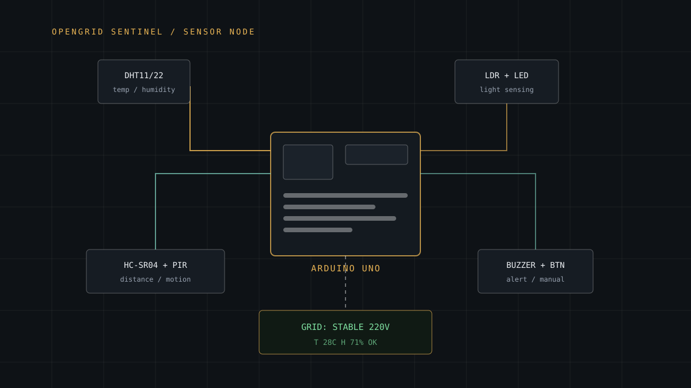

Hardware
OpenGrid Sentinel
A one-month Arduino build that watches a room (temperature, humidity, distance, motion and light) and reports what it sees on a 16×2 LCD with audible alerts.

- Role
- Design, wiring, firmware and integration
- Duration
- One month (project window)
- Status
- Prototyped
- Controller
- Arduino Uno
- Sensors
- DHT11/DHT22 · HC-SR04 · PIR · LDR
- Output
- 16×2 LCD · buzzer · LEDs
- Input
- Pushbuttons (manual control)
- Related
- Door-Unlocking Mechanism
Problem
A microcontroller has a handful of pins, a limited memory budget and no operating system to smooth things over. Ask it to poll five different sensors (each with its own timing rules, signal type and quirks) and simultaneously drive a character display, listen for button presses and decide when to raise an alarm, and the difficulty is not any single part. It is making all of them coexist without one starving the others.
Most "Arduino project" examples do exactly one of those things. The project was the combination.
Why it mattered
Condition monitoring is the unglamorous infrastructure behind places people actually use: a classroom that is too hot, a storage room nobody checked, a space that is occupied when it should not be. Building it from commodity parts rather than a bought sensor unit meant I had to understand every measurement from the pin upward.
It was also the clearest way to learn how embedded constraints shape software design.
My role
Sole designer and implementer: circuit design, component selection, wiring, firmware, calibration and iterative debugging.
- Selected the sensor set and justified each one against the constraint of a single Uno
- Designed the wiring and power budget, including pull-ups and resistor values for the LEDs and LDR divider
- Wrote the firmware: sampling schedule, debouncing, threshold logic and display rendering
- Calibrated readings and set alert thresholds
Technical approach
- DHT11/DHT22 for temperature and humidity: a single-wire digital protocol with a strict minimum interval between reads, so polling it too eagerly returns stale data.
- HC-SR04 ultrasonic sensor for distance, using trigger/echo timing and converting round-trip time to centimetres.
- PIR for motion: digital output, but one that needs a warm-up period before its readings mean anything.
- LDR divider for light level, read through the analogue input and mapped to a usable range.
- 16×2 LCD as the primary readout, plus buzzer and LEDs for alerts and pushbuttons for manual override.
The architecture is a cooperative scheduler in the main loop: each sensor is sampled on its own interval, the display refreshes only when values actually change, and button input is debounced so a single press registers once.
Implementation
The key engineering decision was refusing to use blocking delays. The obvious way to pace sensor reads is delay(), which stops the firmware doing anything else while it waits. With five sensors that approach collapses quickly.
- Non-blocking timing based on
millis(), so the loop keeps servicing input and output while sensors wait out their intervals - Display updates written only when a value changes, to avoid flicker and wasted cycles
- Button input debounced with a time window rather than assumed clean
- Thresholds stored as named constants at the top of the sketch, so tuning never means hunting through logic
- Readings sanity-checked before display: an ultrasonic sensor that returns 400cm in a small room is a glitch, not a fact
Impact
The prototype runs: all five sensors report to a shared readout, alerts fire on thresholds, and manual buttons override automatic behaviour. It demonstrated the pattern well enough that I reused the same scheduling approach in later hardware work, including the door-unlocking mechanism.
The transferable result was not the box of wires. It was learning how to structure software when you cannot block, cannot cache your way out of trouble, and have one shot per loop iteration.
Challenges
- Conflicting timing requirements. The DHT refuses to be read more than roughly once every two seconds, the ultrasonic sensor needs microsecond precision, and the LCD wants periodic attention. Forcing them into one loop took several rewrites.
- Power integrity. Adding the buzzer and motors-like loads caused voltage dips that made the LCD and sensor readings unreliable until decoupling was added.
- Noisy readings. The LDR and ultrasonic sensor both produced values that needed filtering before they were worth displaying or acting on.
- Pin budget. The LCD alone consumes most available pins, which drove real choices about what else could stay.
- Physical reliability. Breadboard connections that work at a desk fail when moved, a lesson in strain relief and cable management.
What I learned
Embedded work punishes assumptions that software usually lets you get away with. Time is explicit. Memory is explicit. A sensor can lie, and you are responsible for deciding whether to believe it.
The broader lesson: when you cannot block, you design around events and intervals, which is, more or less, how most production systems already work. The constraints just make them impossible to ignore.